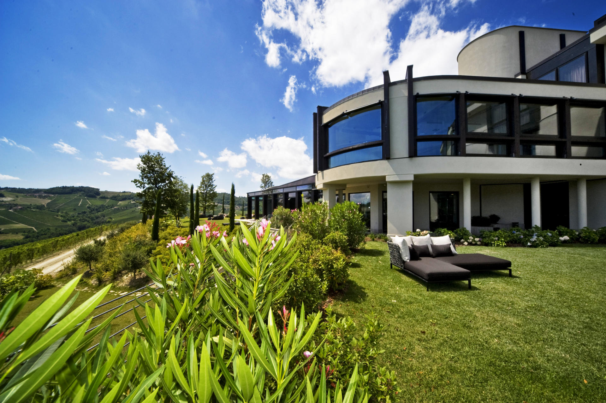

Il Boscareto Resort & Spa
on site · 0 minForty-nine rooms and suites, indoor pool, La Sovrana Spa, covered EV-equipped car park. The only bed from which Saturday's dinner ends with a walk across the resort instead of a phone call to a driver at 23:30.[13]
★ The walkable bed